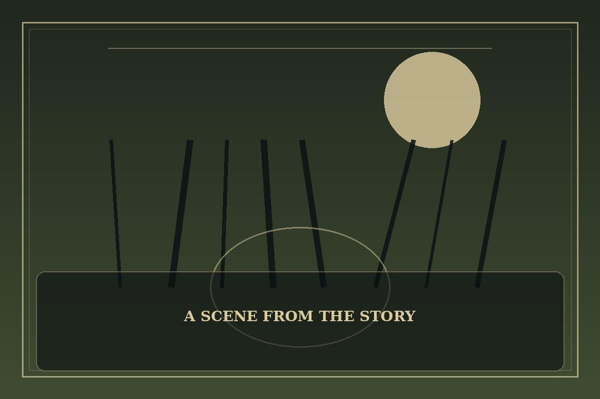

SSS-Class Revival Hunter
Synopsis
A hunter with an extraordinary ability to return after death faces challenges that cannot be solved by strength alone. Every reset teaches him that empathy can be a greater advantage than certainty.
Chapter 1: The Price of One More Try
The bell rang, and Arin knew he had failed again. He had returned to the same corridor, the same broken lantern, and the same moment before the team entered the sealed chamber.
He remembered every mistake, including the one that had cost his friend a life. The power to try again made him confident at first; now it felt like carrying a hundred versions of grief that nobody else could see. He could change the plan, but he could not force people to trust him.
This time he told the team the truth about the danger and let them choose whether to continue. Their plan was slower and far less elegant, but everyone understood the risks. When the door finally opened, Arin discovered that a second chance worked best when it belonged to more than one person.

This fan-made sample is an original piece created for a student website project; it is not an official chapter of SSS-Class Revival Hunter.